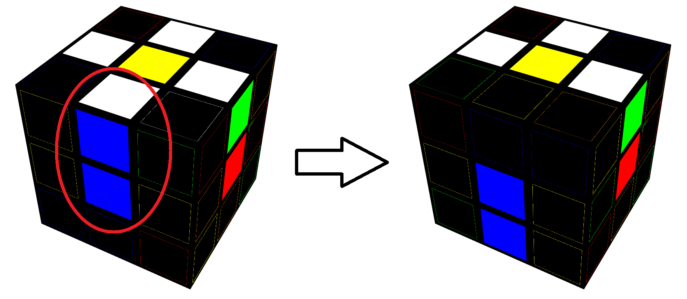

一、基本概念教學
1. 魔術方塊代號
由於魔術方塊複雜的公式與解法在記憶上十分困難，
因此我們會借助英文代號來紀錄公式、打亂之中。
代號以六種英文字母代表，
分別是 Right(R)、Up(U)、Front(F)、Left(L)、Down(D)、Back(B)。
-
如果英文代號後沒有加上任何符號，表示你要面向該面旋轉順時針。
-
如果英文代號後加上一個 ' (唸做prime)，表示你要面向該面旋轉逆時針。
-
如果英文代號後加上一個 2，表示你要面向該面旋轉180度。

(以上圖片取自J perm)
二、第一層
1. 底面十字
這裡使用的方法叫做LBL(Layer By Layer)，也就是一層一層解的意思
我們在開始還原前，會先選擇一個面的顏色作為起始顏色，通常都以白色面做為起始面。
我們把十字分為兩個小步驟：
把四個白色邊塊圍繞黃色中心 → 將中心塊對齊後把邊塊180度轉到底下
那我們先從「白色邊塊圍繞黃色中心」開始吧~
遇到以下情況時，請按照下面的做法完成公式
| Case |
Solution |
 |
R |
|
F' |
|
F2 |
 |
F' U' R |
|
F U' R |
接下來只需要轉動上層(U層)，找到對齊中心塊的顏色後，180度轉到底部

2. 完成角塊
十字完成之後，把剩下的角塊補齊就做好第一層了！
首先你要先在上層(U層)找到一個有白色色塊的角塊(圖中以白紅藍為例)
並找到它該去的位子後，把該角塊移到那個位子的正上方，
並不停做R U R' U'，直到角塊的位置與方向正確
另外要提醒一點，做R U R' U' 放邊塊時，要注意角塊放入的方向是否正確。
若位置對了但是方向錯的話，要繼續做R U R' U' 直到位置與方向都正確哦！